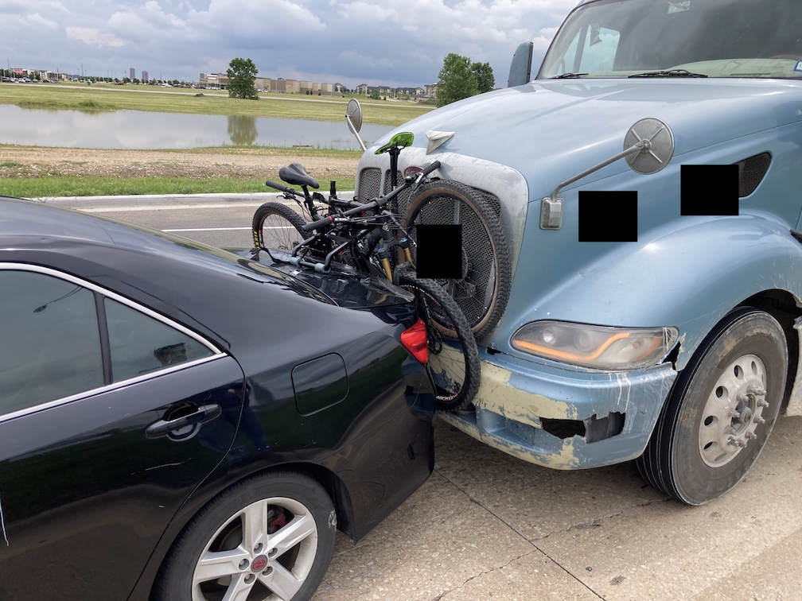
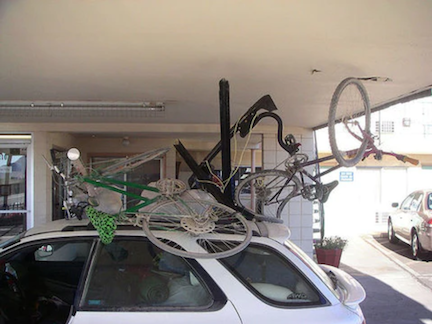

Roof vs. hitch.
Last year I got rear-ended by a semi truck with mine and my friend's bikes on the back. My friend's bike was totaled while my chainstay was bent. The trucker's insurance paid for everything, but it was still a massive pain-in-the-butt: my friend was out of a bike for a few months while he sourced new parts, I was concerned about the integrity of my frame while riding some rather rocky trails, and the now-bent rack didn't fit properly on my now-bent trunk door.
This problem could have been avoided had I been using a roof rack, but that would be at the literal expense of aerodynamics, which got me thinking: which is more economically advisable, a roof rack or a hitch rack?
Suspension Traveler's compiled data shows the following negative fuel efficiency effects for below 60 mph:
| below 60 mph: | Subcompact | Sedan | SUV |
| Roof bike rack (loaded) | 16% | 15% | 7% |
| Hitch bike rack (loaded) | 14% | 13% | 5% |
| Roof bike rack (empty) | 3% | 2% | 1% |
| Hitch bike rack (empty) | 1% | 1% | 0% |
And the following for above 60 mph:
| above 60 mph: | Subcompact | Sedan | SUV |
| Roof bike rack (loaded) | 30% | 28% | 19% |
| Hitch bike rack (loaded) | 27% | 25% | 12% |
| Roof bike rack (empty) | 14% | 11% | 5% |
| Hitch bike rack (empty) | 4% | 3% | 2% |
For simplicity's sake, we will look at a sedan going above 60 mph with a loaded roof rack vs. a loaded hitch rack with a baseline fuel efficiency of 30 mpg. For abbreviations, we will use BL (baseline), RR (roof rack), and HR (hitch rack).
Assumptions include the following:
Fuel efficiency of RR is:
FERR = FEBL × (1.00 - 0.28) = 21.6 mpg
And for HR:
FEHR = FEBL × (1.00 - 0.25) = 22.5 mpg
This means that for the average person who drives 14,000 miles per year at an average per gallon cost of $3.00, we get:
CostRR = 14,000 / FERR × 3.00 = $1950/year
CostHR = 14,000 / FEHR × 3.00 = $1870/year
Or an $80/year difference. Not much!
Supposedly for every 1000 miles you drive, your chances of getting into a car accident are 1 in 366. If we multiply this by 14 to get total miles driven, the chances of getting into a car accident are:
Chances of car accident = 14 × 1/366 = 3.83%
If we take the average upper-end bike cost to be $4,000 and the percentage of uninsured motorists who won't pay for the damages to be 12.6%, the expected value spent per year on damaged bikes is:
Dollars per year on damaged bikes: 0.0383 × $4,000 × 0.126 = $19
Just using this, it would take around four years for a roof rack to become worth it. However, this doesn't take into account defensive driving techniques that can be used to minimize the risk of an accident.
It takes approximately the same amount of time to put a bike on a RR vs. a HR on a sedan, but accessing the trunk with a HR can be inconvenient. The impact is probably negligible so I will ignore it.
Roof racks probably win out over hitch racks if everything can be kept equal. Can it? I don't know and won't find out because I already bought an expensive hitch rack that I'll use forever.